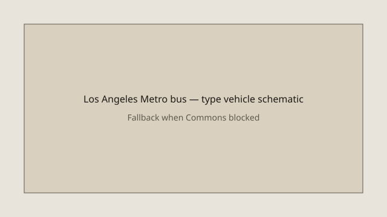

Los Angeles · criminal charges · 18 September 2026
Los Angeles prosecutors charge the SUV driver with two counts of second-degree murder in the Metro bus collision.

What is agreed across desks
On 17–18 September 2026, Los Angeles County District Attorney Nathan Hochman announced that Bailee Lynn Rios, 36, of Simi Valley, had been charged with two counts of second-degree murder in connection with the deaths of two passengers on a Los Angeles Metro bus. The passengers were identified by the county medical examiner as Daniel Castillo, 46, and Gage Weida, 31. The collision occurred shortly after 5 p.m. on Tuesday, 15 September, in the Chatsworth neighborhood of the San Fernando Valley at the intersection of De Soto Avenue and Nordhoff Street.
Prosecutors allege that Rios was operating a gray 2004 Ford Expedition while under the influence of drugs, drove southbound in the northbound lanes of De Soto Avenue, nearly struck an eastbound vehicle, ran a red light at high speed, and collided with the side of a Metro Line 166 bus. The impact forced the bus into a utility pole and ejected or partially ejected passengers. Six other people were taken to hospitals. Narcotics were recovered from Rios’s vehicle, according to the District Attorney’s Office. Rios was held on bail set above $4 million and was scheduled to appear in San Fernando Superior Court; a medical event delayed her Thursday appearance and she was expected in court on Friday, 18 September.
Separately, a news helicopter that had been covering the bus collision crashed later the same evening a short distance away, killing the pilot, George Marciniw; the reporter and photojournalist Eliana Moreno of NBC4 / Telemundo 52; and a person on the ground, Edy Gutierrez Mejia, 29. The helicopter crash is under its own investigation by the National Transportation Safety Board and local authorities. The murder charges announced by Hochman do not include any counts related to the helicopter deaths.
What is only a quote or interpretive framing
District Attorney Hochman’s characterization of the bus collision as “entirely preventable” and “a tragedy of the Rios car crash” is the prosecutor’s evaluative language. The charging decision itself is a formal act of the District Attorney’s Office based on the investigation conducted by the Los Angeles Police Department’s Valley Traffic Division. The claim that Rios was impaired by drugs is supported by the recovery of narcotics from the vehicle and by statements attributed to prosecutors; the full toxicology results and the precise sequence of impairment will be tested at trial if the case proceeds.
Media accounts that describe the helicopter crash as a direct consequence of the bus collision are chronological observations, not legal conclusions. The two events occurred in close temporal and geographic proximity, but the causal chain that led the helicopter to lose power remains under investigation and is not part of the murder charges filed against Rios.
Mechanism and history a reader needs
Under California law, second-degree murder does not require premeditation. It can be established by a showing of implied malice—that is, that the defendant acted with a conscious disregard for human life. Prosecutors frequently charge second-degree murder in fatal DUI collisions when they conclude that the evidence supports a finding of implied malice rather than the lesser charge of vehicular manslaughter. Whether a jury will accept that theory is a question for trial; the charging document is the District Attorney’s initial formal statement of the case.
Rios’s prior record, as reported from Ventura County court documents, includes a 2016 misdemeanor drug-possession conviction and a 2022 conviction for driving on a suspended license (a related drug-possession charge in that case was dismissed). Those prior cases are public records and form part of the background that prosecutors and defense counsel may address, but they do not themselves establish the elements of the 2026 charges.
The Metro bus involved was operating Line 166, a fixed-route service in the San Fernando Valley. Los Angeles Metro is a public agency; the system map used as the hero image is an official document in the public domain. The Chatsworth intersection is a standard signalized crossing on major arterial streets. Video footage released or described by authorities shows the Expedition traveling the wrong way and entering the intersection against a red light at high speed—observations that match the charging narrative.
Bail in California is set according to a schedule and judicial discretion that takes into account the severity of the charges, the defendant’s criminal history, and community safety. The amount reported for Rios exceeds $4 million; whether that amount will be reduced or whether she will remain in custody is a matter for subsequent court hearings.
What the story is not
The filing of second-degree murder charges is not a conviction. It is the formal accusation that begins the criminal process. The helicopter crash remains a separate investigation; no charges have been announced that connect Rios to those three deaths. Statements that treat the bus collision and the helicopter crash as a single legal event exceed the charging documents. Speculation about ultimate sentence exposure or about the likelihood of a plea agreement is premature until the evidence is tested in the adversarial process.
Coverage that focuses primarily on the emotional impact of the compounded tragedies without separating the checkable facts of the charging decision from the still-open helicopter investigation risks conflating two distinct official inquiries. The medical examiner’s identification of the bus passengers, the District Attorney’s charging announcement, and the NTSB’s ongoing review of the helicopter are the primary anchors for what can be stated as established at this stage.

Source articles and scores
Images: Wikimedia Commons LA Metro system map (public-domain government work) via Special:FilePath. Caption states it is not the crash scene. Local SVG as second image and onerror fallback. No crossorigin attribute.